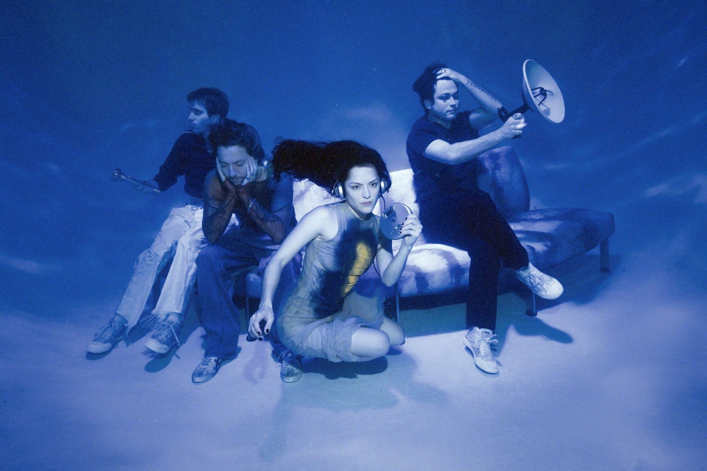
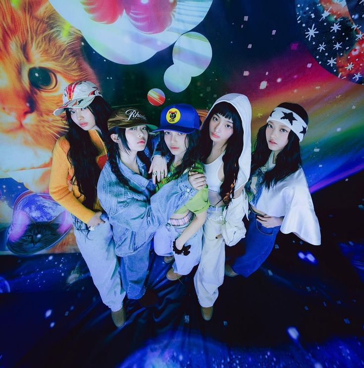

Music has always been present in someone's life. I've loved music since I was a child—singing along even before I could read, dancing and swaying with the rhythm and melody. Even without knowing how to sing or play instruments, simply listening brings me comfort and improves my mood, making music one of my main coping methods.
Favorite Artists
Sabrina Carpenter
Sabrina Carpenter has become one of my favorite artists lately. Her music feels bold, confident, and expressive. What stands out is how she embraces femininity and sexuality in an empowering way. Her songs may be controversial, but they feel honest and unapologetic.

The Marías
The Marías create dreamy pop music that feels emotional and immersive. Their soft, almost hypnotic sound creates a calm and intimate atmosphere. Their ballad-heavy style adds depth and makes their songs perfect for quiet or reflective moments.

Will Wood
Will Wood’s music stands out because of its quirky, chaotic, and upbeat energy. His songs are playful, theatrical, and unpredictable, making them fun to listen to. His unique style always brings excitement whenever I listen.

New Jeans
NewJeans has a refreshing and unique sound that blends pop and R&B with nostalgic influences. Their music feels soft, relaxed, and emotionally comforting. Their themes of youth make their songs easy to connect with.